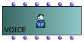
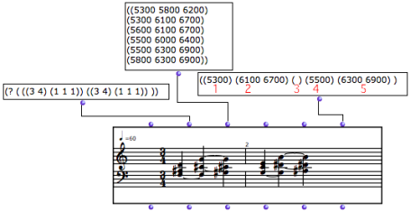
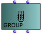
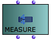
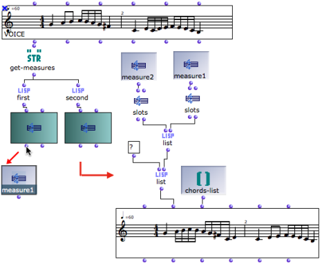
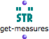

OpenMusic DocumentationHiérarchie de section : OM 6.6 User Manual > Score Objects > Presentation > Rhythmic Objects
OpenMusic DocumentationHiérarchie de section : OM 6.6 User Manual > Score Objects > Presentation > Rhythmic Objects
Navigation : page précédente | page suivante
Attention, votre navigateur ne supporte pas le javascript ou celui-ci à été désactivé. Certaines fonctionnalités de ce guide sont restreintes.
Rhythmic Objects
The Voice Object
A voice is a melodico-rythmic line.
Inputs and Outputs
|  | The voice object has six inputs and outputs. |
"self" : a voice , measure or list of measures , or a chord-seq .
"tree" : a rhythm tree[1].
"chords" : a chord, broadly speaking – chord, list of chords, a list or sub lists of midicents.
"tempo" : speed of a quarter note.
"legato" : an overlapping percentage between two chords, calculated from the second chord's duration.
"ties" : sub lists – one sub list per chord – indicating notes to be tied to notes of the same value, in a next chord.
The combination of inputs programming and score edition allows a complete musical edition of the object. |
{kind=link}
Programming Rhythm Trees Basics
Ties
Ties are a specific parameter of rhythmic objects. To specified that a pitch must be tied to the next one, enter this pitch in a sub list in the "ties" input.

The rank of tied elements must match the rank of the corresponding chords or notes in the "midic" input. Otherwise, OM won't recognize the elements to be tied.
Detailed Information About Voices Edition
Measure and Group
|   | Groups and measures are complementary modules of the Score class. |
They have two inputs and outputs :
- "self"
- "rhythm tree[1]".
They can also be isolated as distinct rhythmic elements within voice editors.
About Measures and Groups within Voices :
Uses
Groups and measures are used for :
- programming elementary rhythmic structures, which can be saved as instances or global variables for a subsequent use
- storing rhythmic structures once they have been extracted from a rhythm tree.

Switching the chords and rhythms of two measures using measure instance boxes.
Getting Measures
|  | The get-measures function returns a list of measures from a voice . |
Références :
Rhythm Tree
A rhythm tree expresses a rhythmic structure as a list.
This list is made of :
a duration, or number of measures,
a list of measures.
Each measure is made of
a time signature
a list or proportions, or rhythmic values.
For instance : (1 (((4 4) (1 1 2))) is a rhythm of one measure, signature 4/4, with two quarter and one half note (proportions = 1/4 1/4 2/4 = 1/4 1/4 1/2).
The term of "tree" refers to a recusrive structure: each item in the proportions list can in turn be expressed as a duration with a list of subdivisions.
For instance the second beat in our measure could be subdivided as follows : ((4 4) (1 (1 (2 3)) 2)).
Plan :
Navigation : page précédente | page suivante
A propos...(c) Ircam - Centre Pompidou